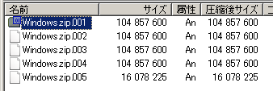
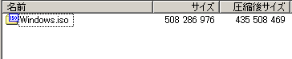
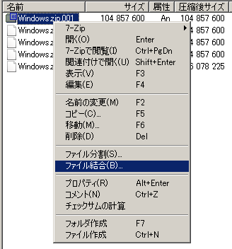
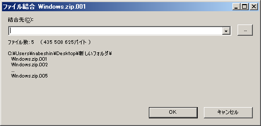

001ファイルを解凍する
分割圧縮されたファイルは、「～zip.001」、「～zip.002」、「～.7z.001」、「～.7z.002」のようなファイル名（拡張子）になっています。結合したい場合は、あらかじめ分割ファイルすべてを1つのフォルダにまとめておきます。
001ファイルをダブルクリックする
001ファイルに7-Zipが関連付けられていれば、001ファイルをダブルクリックするだけで、7-Zip File Manegerが起動し、連結された圧縮ファイルの中身が表示されます。中身が正しいようであれば、これを展開（解凍）しれば完了です。具体的には、
・ファイルを選択して、ツールバーにある「展開」ボタンを押す
・ファイルを選択してデスクトップなどにドラッグ＆ドロップする
のどちらかを実行すれば操作が完了します。
分割ファイルの入ったフォルダを7-Zipで閲覧する
001ファイルに7-Zipの関連付けがない場合は、まず7-Zip（7-Zip File Maneger）を起動し、7-Zipで分割ファイルが置かれているフォルダを閲覧します。.001ファイルなどの分割ファイルが見えた状態で、001を選択（ダブルクリック）すると、結合されたファイルにある中身が見える状態になります。あとは通常の解凍作業と同じで、取り出したいファイルを選択して、デスクトップなどにドラッグ＆ドロップするか、ツールバーにある「展開」ボタンを押して、結合・展開を行います。
↓↓↓↓↓↓↓001ファイルをクリック↓↓↓↓↓↓
ここで「展開」ボタンを押す or 中身のファイルをデスクトップなどにドラッグ＆ドロップすると結合＆解凍が実施されます。
分割ファイルの結合のみ行う
大きなHDD上で分割ファイルを圧縮ファイルのままで保管したいような場合などは結合のみをしておきます。7-Zip Filr Manegerで分割ファイルを表示している状態で001ファイルを右クリックし、「ファイル結合」を選択すると、結合したファイルの保存先を指定するダイアログが表示されるので、保存先を指定して「OK」ボタンを押します。
↓↓↓↓↓↓↓↓↓↓↓↓
OSDN Project